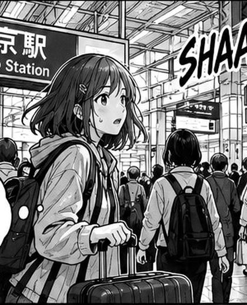
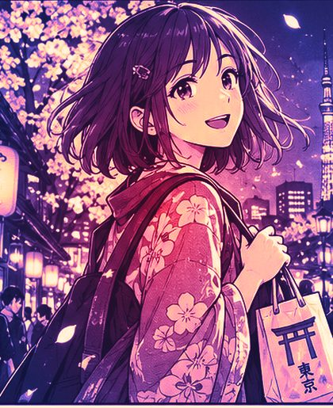

Stress kills
curiosity.Less worry.
More culture.

So many people… where do I go?
Sugoi! Japan is so beautiful!Remember her at the station? Anxious travellers stick to safe hotspots and leave without ever meeting Japan.One guide takes the worry. The hours she gets back go to tea with a host, a festival, a friend.
Othello was created in Japan in the 1970s. One good move flips the whole board.
Why Trip DNA should exist
What travellers love Our film
To meet Japan, not just see it: tea with a host, a craft, a festival. Stress pushes them back to the hotspots.
What we're good at Live demo
A plan that survives reality: verified places, stress-test, one-tap repair. Mottainai for itineraries: repair, don't rebuild.
What Japan needs Market
Visitors beyond the hotspots and yen for small hosts. Today 69.4% stay in 3 metro areas and experiences get 4.5% of spend.
What pays Business
Hosts pay 10–15% and keep ¥88 of every ¥100. Year 3: ¥142.5M revenue on ¥849M of bookings (model).
Less worry. More culture.
Sources: JTA 2025 [S4], JNTO [S11]; revenue is our model's illustrative Year 3 (research.md).
Built in one night.
Grown with patience.
Working in today's demo
- 1A day planned in 60 seconds from the airport to a locked 2 pm goal
- 2Stress-test + one-tap repair missed train → four options → rebooked
- 3Culture at every stop etiquette, local hosts, booked lunch
- 4Tabi Feed + つながる post, earn an otoshidama coupon, meet locals
- 53 modes · 6 languages Leisure, Business, Study
Blooming next
- ✿Camera sign translation
- ✿Real bookings + payments
- ✿Verified guides
- ✿Partner dashboard
- ✿Live SOS + disaster alerts
- ✿Business meetups
Roots: verified places, culture data and a host network. The pot's gold seam is kintsugi: we repair what breaks, and prune by what we measure.
お年玉At New Year in Japan, elders give children money in a small decorated envelope. We brought one too.
What's in our envelope?Not money. Three small yeses.
A gift is chosen for the person who opens it.One email, one campaign, thirty introductions. In three months we come back with numbers.
Arigatō
Less worry. More culture. · Trip DNA
一期一会 Ichi-go ichi-e. The tea ceremony teaches that each meeting happens only once. Thank you for sharing this one with us.
Questions? 質問
Team Out of Bounds · four of us, one tier
japan-cultural-and-tourism-exchange.vercel.app